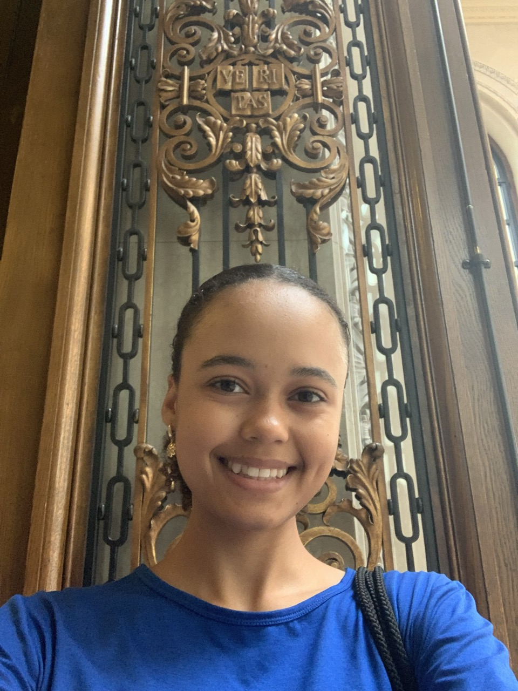

<div class="textcontainer">
<h3>About Me</h3>
<p class="margin"> </p>
<div class="center-row">

<p id="aboutme">
Hello! My name is Hallel Chery. I am a current first-year at Harvard, and I am planning on concentrating
in Mechanical Engineering. The reason I chose this concentration is I want to create products and
solutions to can solve real-world problems for the benefit of humanity. I am especially interested in the
space sector, but I'm also interested in solving important problems on Earth such as water scarcity and
access to education.
</p>
</div>
<br></br>
For fun, I enjoy assembling 3D models of machines, particularly space-related ones like
my metal model of NASA's opportunity rover! I also like to play the piano and golf. I love classical music, and
my favorite orchestral composer is Antonio Vivaldi - the four seasons are the best.
I'm excited to learn all of the content covered in this class, and I plan to put the skills gained to use in creating
prototypes related to space exploration.
<br></br>
</div>